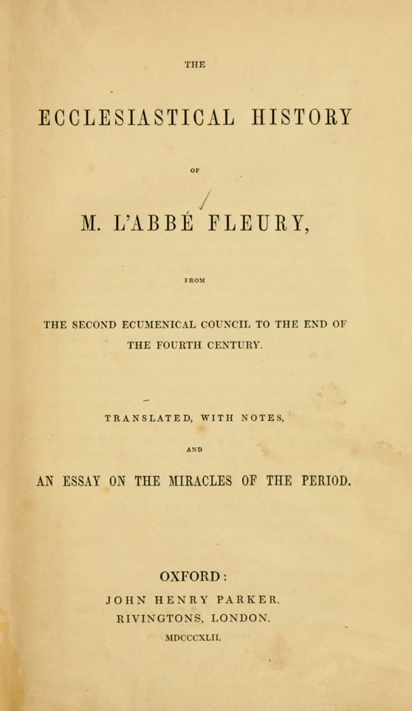
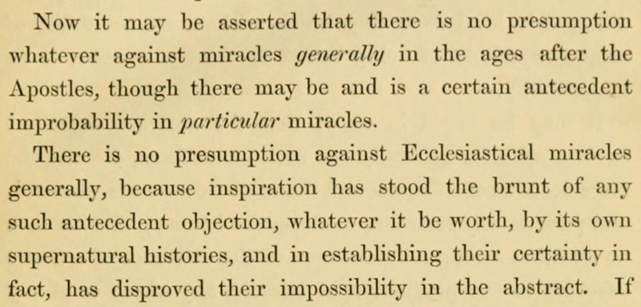

“On the antecedent probability of the ecclesiastical miracles” (Section II, p. xv)
English: Oxford 1842, Section II, p. xv, scan n18. Newman’s italics kept. Highlighted: the thesis Lecky summarises.


Now it may be asserted that there is no presumption whatever against miracles generally in the ages after the Apostles, though there may be and is a certain antecedent improbability in particular miracles.
There is no presumption against Ecclesiastical miracles generally, because inspiration has stood the brunt of any such antecedent objection, whatever it be worth, by its own supernatural histories, and in establishing their certainty in fact, has disproved their impossibility in the abstract. …
Lecky (ch. II, note 16): “Dr. Newman’s very able essay (prefixed to Fleury’s History) is essentially an apology for the ecclesiastical miracles”. The opening of its argument bears that out.
Further down the rabbit hole
Sources that Lecky cites in the notes next to the ones that cite this page.
- Augustine, De civitate DeiSeventy reports, not miracles, and a town, not a province
- Newman, Difficulties felt by Anglicans“The Nation being on its way to give up revealed truth”: a premise Newman went on to reject
- Farmer, A Dissertation on MiraclesA dissenting minister argues that the Devil cannot work miracles
- Macaulay, History of England and EssaysMacaulay on Puritans, bear-baiting and the servile Church
- Locke’s Commonplace Book on Inspiration and MiraclesHume’s argument against miracles, seventy years before Hume
- Montalembert, Le Père LacordaireThe heresiarch who took no one with him


Backlinks
Every place in Rationalism in Europe that links to this page (generated automatically when the site is built).
- Chapter II: note 16